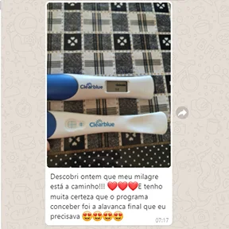
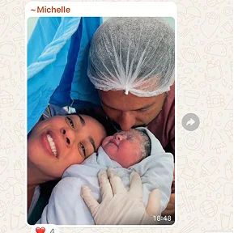
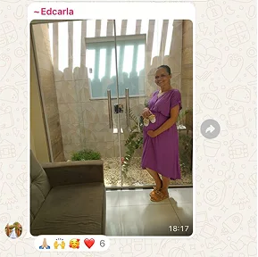
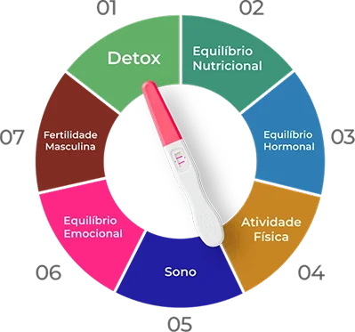
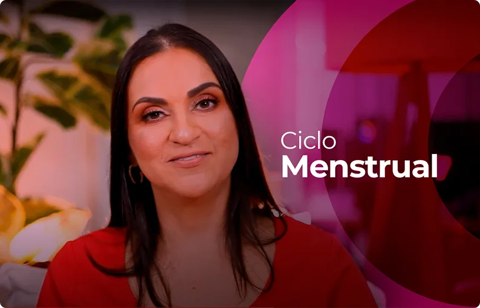
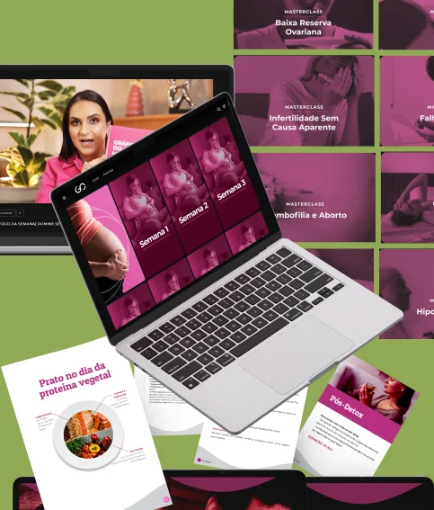

Rotina
- Planner físico;
- Planos alimentares desenvolvidos por nutricionistas;
- Cardápios e receitas práticas para fertilidade
- Listas de compras semanais
- Treinos físicos com foco em ativação da fertilidade
Programa semanal para engravidar de forma rápida, com mentorias, análises de exames e prescrição de suplementação.
Quero engravidar de forma naturalMais de 1.700 mulheres já engravidaram com a ajuda do Programa.




Existem 7 pilares que, se bem trabalhados, podem te fazer engravidar já nos próximos meses
Como especialistas em fertilidade, já ouvimos inúmeras histórias de tentantes que foram tratadas como estatísticas pelos profissionais que as atendiam, ou pela própria rede de apoio.
“Não acha que já está velha para engravidar?”
“Com esse diagnóstico, você não vai conseguir”
“Olha o tanto de dinheiro que você já gastou”
“Você já tentou tanto. Ser mãe pode não ser pra você.”
Como se uma mulher não conseguir engravidar, ou passar por sucessivas perdas fosse comum.
Eu mesma, que hoje tenho dois filhos nos braços, já senti isso na pele.
Então, estou aqui para te garantir:
Seu diagnóstico, sua idade, ou os seus exames não determinam a sua fertilidade.
Detox completo do corpo e da mente
Equilíbrio nutricional que favorece o ciclo fértil
Regulação hormonal natural e contínua
Atividade física que ativa o seu sistema reprodutivo
Sono profundo e restaurador
Estabilidade emocional ao longo do ciclo
Participação ativa do parceiro (fertilidade masculina)
Mais de 1.700 mulheres já engravidaram após entrarem no Programa Conceber e passarem pelo acompanhamento de 12 semanas, em que lidamos com cada um dos 7 pilares.
Você pode fazer o mesmo e estar grávida já nos próximos meses.
Quero acompanhamento para engravidarOrientação médica, apoio emocional e ferramentas práticas para melhorar sua fertilidade em 90 dias.
A metodologia que já ajudou +1700 mulheres a engravidarem.


Meu nome é Talita Melo.
Sou Médica Ginecologista, referência em fertilidade no Brasil, autora do livro FÉrtilidade e co-fundadora do Conceber, um dos maiores programas de acompanhamento para quem quer engravidar no Brasil.
Com 7 diagnósticos, passei 10 anos no deserto da infertilidade e precisei enviar 5 filhos a Deus.
Mas, hoje tenho 2 garotos lindos nos braços.
Isso só foi possível porque eu tratei os 7 Pilares da Fertilidade, que é justamente o que você pode começar a fazer agora, por meio do Programa Conceber.
Se calcularmos separadamente, o Programa Conceber vale:
Mas, hoje, você pode começar seu acompanhamento:
De R$ 7.970,00 por
12x de R$ 297,90
ou R$ 2.997,90 à vista
Quero engravidar nos próximos mesesGarantia de 7 dias, conforme a lei.
Falar com um assessor do ConceberINSCRIÇÕES FECHADAS NESTE MOMENTO
Entre na lista de espera para ser avisada sobre a próxima abertura e receber as informações do programa ou entre em contato com um assessor do Conceber
Entrar na lista de espera! Falar com um assessor do Conceber